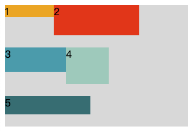
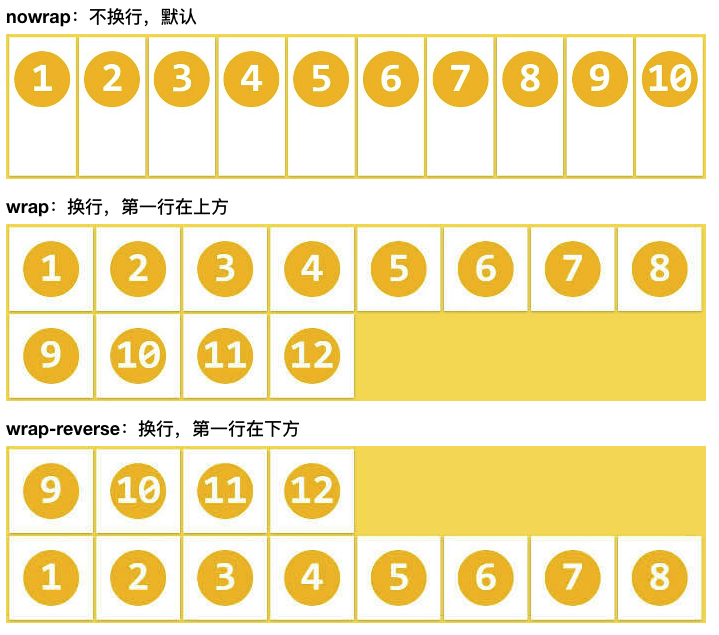
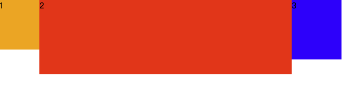

父容器的属性
给父容器设置 display: flex 或 display: inline-flex 后再设置下列相应的属性。
1
2
3
4
5
6
7
8
9
10
11flex: direction: 主轴排列方向
jusitfy-content: 主轴的对齐方式
align-items: 交叉轴的对齐方式
align-content: 多行的flex容器交叉轴对齐方式
flex-warp: 定义如何换行
flex-flow: flex-direction和flex-warp的简写
1、flex-direction: 主轴排列方向
- row: 水平方向，起点在左，默认
- row-reverse: 水平方向，起点在右
- cloumn: 垂直方向，起点在上
cloumn-reverse: 垂直方向，起点在下

2、jusitfy-content: 主轴的对齐方式
根据 flex-direction 设置的方向来决定，例如 flex-direction 默认为row时，主轴在横轴，flex-direction 设置为column时，主轴在纵轴。
- flex-start: 左对齐，往左靠，默认
- flex-end: 右对齐，往右靠
- center: 居中对齐，往中间靠
- space-between: 两端对齐，各个子级间隔相等
- space-around: 各个子级两端相等，两侧也有间距
假设主轴为横轴：
3、align-items: 交叉轴的对齐方式
根据 flex-direction 设置的方向来决定，例如 flex-direction 默认为row时，交叉轴在纵轴，flex-direction 设置为column时，交叉轴在横轴。
align-items 属性适用于所有的flex容器，它是用来设置每个flex元素在交叉轴上的默认对齐方式。
- flex-start: 顶对齐，往上靠，默认
- flex-end: 底对齐，往下靠
- center: 垂直居中对齐，往中间靠
- baseline: 以第一行文字的基线对齐
- stretch: 若未设置高度或auto，将占满整个高度
假设主轴为横轴，交叉轴为纵轴：
4、align-content: 多行的flex容器交叉轴对齐方式
align-content 属性只适用于多行的flex容器，并且当交叉轴上有多余空间使flex容器内的flex线对齐。
对于只有一行的flex元素，align-content 是没有效果的。实现效果基本同 align-items。
通常会用在自动超出换行的时候，如：
1
2
3
4
5
6
7<div class="parent">
<div class="child1">1</div>
<div class="child2">2</div>
<div class="child3">3</div>
<div class="child4">4</div>
<div class="child5">5</div>
</div>
1 | .parent { |

- flex-start: 与交叉轴起点对齐
- flex-end: 与交叉轴终点对齐
- center: 与交叉轴中点对齐
- space-between: 与交叉轴两端对齐
- space-around: 每根轴线两端间隔相等
- stretch: 元素被拉伸以适应容器，默认。加入元素未沾满纵向空间会自动占满分配该空间（等分），如上图

5、flex-warp: 定义如何换行
- no-wrap: 不换行，默认。当容器空间不足时，所有子元素都会按比例缩小。
- wrap: 换行，第一行在上
- wrap-reverse: 换行，第一行在下

6、flex-flow: <flex-direction>和<flex-warp>的简写
连续两个值表示排列方向和如何换行
- row nowrap: 水平且不换行，默认
…
子级的属性
1 | order: 定义项目的排列顺序 |
1、order: 定义项目的排列顺序
默认是按照DOM的顺序来进行排列的，通过order可以改变这种顺序，类似z-index
默认为0，数值越小越靠前，相同数字按照DOM的顺序排列
1
2
3.item {
order: <integer>; /* default: 0 */
}

2、flex-grow: 定义项目的放大比例
定义项目的放大比例，默认为0，即如果存在剩余空间，也不放大。
如果所有项目的 flex-grow 属性都为1，则它们将等分剩余空间（如果有的话）。
如果一个项目的 flex-grow 属性为2，其他项目都为1，则前者占据的剩余空间将比其他项多一倍。
如果只有一个项目设置 flex-grow 大于0，即该项目占满剩余空间。通常使用该特性来实行两列或三列自适应布局。
1
2
3.item {
flex-grow: <number>; /* default: 0 */
}

三列布局代码如下：
1
2
3
4
5<div class="parent">
<div class="child1">1</div>
<div class="child2">2</div>
<div class="child3">3</div>
</div>
1 | .parent { |

3、flex-shrink: 定义了项目的缩小比例
定义项目的缩小比例，默认为1，即如果空间不足，该项目将等比缩小（作用类似于所有的项目设置flex-grow: 1）。
如果所有项目的 flex-shrink 属性都为1，当空间不足时，都将等比例缩小。
如果所有项目的 flex-shrink 属性都为0，当空间不足时，不缩小，自动超出。
如果一个项目的 flex-shrink 属性为0，其他项目都为1，当空间不足时，前者（flex-shrink: 0）不缩小。
1
2
3.item {
flex-shrink: <number>; /* default: 1 */
}

利用felx-sharink也可以实现两列或三列布局，代码如下：
1
2
3
4
5<div class="parent">
<div class="child1">1</div>
<div class="child2">2</div>
<div class="child3">3</div>
</div>
1 | .parent { |
4、flex-basis: 定义了在分配多余空间之前，项目占据的主轴空间
表示在item被放入flex容器之前的大小，也就是item的理想或者假设大小，但是并不是其真实大小，其真实大小取决于flex容器的宽度。
1
2
3.item {
flex-basis: <length> | auto; /* default: auto */
}
width和flex-basis混用：width失效，以flex-basis为准max-width和flex-basis混用：max-width决定了item的最大宽度min-width和flex-basis混用：min-width决定了item的最小宽度
5、flex: flex-grow, flex-shrink 和 flex-basis的简写
1
2
3.item {
flex: none | [ <'flex-grow'> <'flex-shrink'>? || <'flex-basis'> ] /* default: 0 1 auto */
}
6、align-self: 允许单个项目有与其他项目不一样的对齐方式，可覆盖align-items属性
1
2
3.item {
align-self: auto | flex-start | flex-end | center | baseline | stretch; /* default: auto */
}